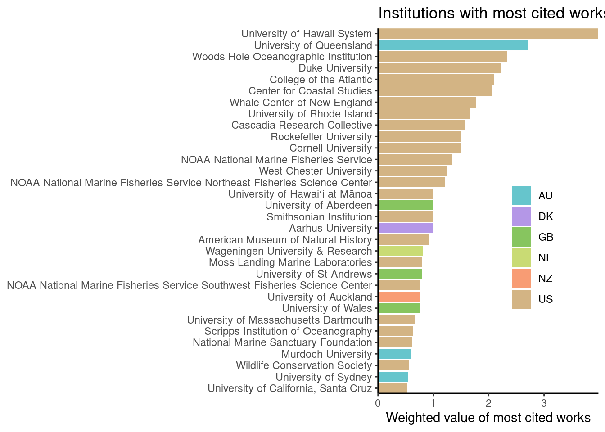
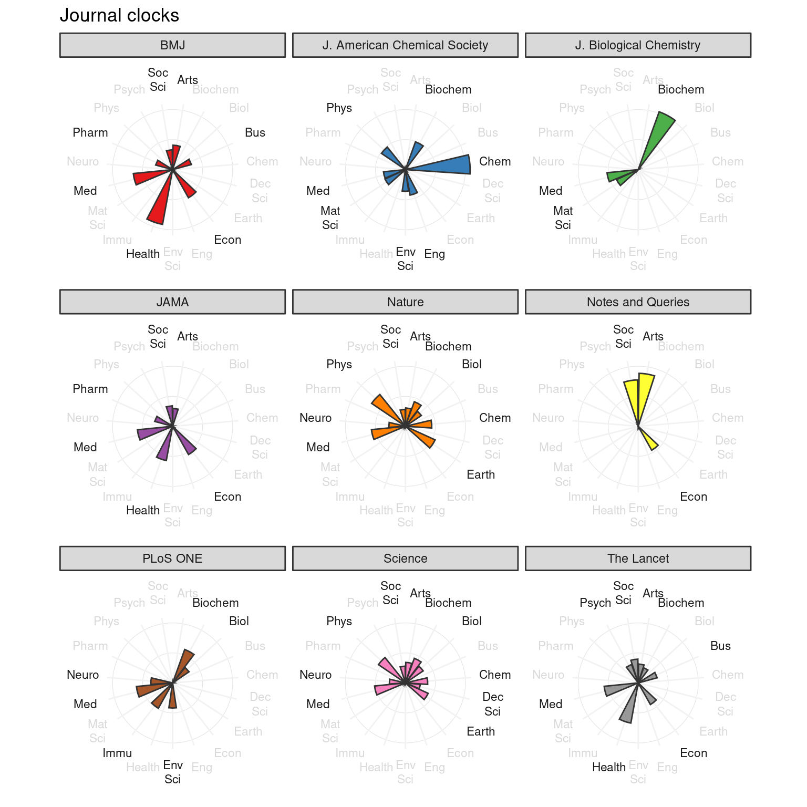
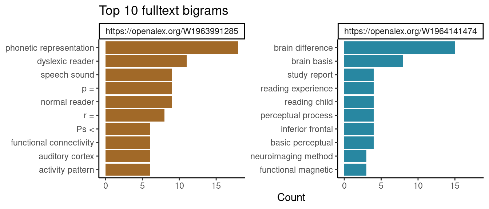

install.packages("openalexR")Introduction to openalexR: a webinar
🌻 Introduction
Welcome to the webinar on openalexR! Today, we will explore how to use the openalexR package to fetch data from OpenAlex, a free and open database of the entire research landscape. With openalexR, you can easily access and analyze scholarly data directly from R.
🌱 Installation and setup
If you haven’t already installed the openalexR package, you can do so from CRAN:
Before we go any further, we highly recommend you set the openalexR.mailto option so that your requests go to the polite pool for faster response times. If you have OpenAlex Premium, you can add your API key to the openalexR.apikey option as well. To do so, you can open .Renviron with file.edit("~/.Renviron") and add:
openalexR.mailto = example@email.com
openalexR.apikey = EXAMPLE_APIKEYWe will now load in openalexR and the tidyverse to use for the rest of this webinar.
library(openalexR)
library(tidyverse)
R base pipe
Throughout the webinar, you will see this symbol, |>. Simply put, x |> f() is equivalent to f(x). Using this R base pipe allows us to chain functions together in a more readable way.
🌿 Basic usage
The main function of openalexR is oa_fetch().
?oa_fetchFetching information from identifiers
Let’s start by fetching data on a specific scholarly work using its OpenAlex ID:
Note
When you know the OpenAlex ID of the work, you do not need to specify entity = "works" because entity can be inferred from the first character of id. However, I specify it here for clarity. In other use cases (search, filter), you will almost always want to specify entity. For a list of all supported entities, see oa_entities().
work <- oa_fetch(entity = "works", id = "W2741809807", verbose = TRUE)Requesting url: https://api.openalex.org/works/W2741809807work# A tibble: 1 × 38
id title display_name author ab publication_date so so_id
<chr> <chr> <chr> <list> <chr> <chr> <chr> <chr>
1 https://openalex… The … The state o… <df> Desp… 2018-02-13 PeerJ http…
# ℹ 30 more variables: host_organization <chr>, issn_l <chr>, url <chr>,
# pdf_url <chr>, license <chr>, version <chr>, first_page <chr>,
# last_page <chr>, volume <chr>, issue <lgl>, is_oa <lgl>,
# is_oa_anywhere <lgl>, oa_status <chr>, oa_url <chr>,
# any_repository_has_fulltext <lgl>, language <chr>, grants <lgl>,
# cited_by_count <int>, counts_by_year <list>, publication_year <int>,
# cited_by_api_url <chr>, ids <list>, doi <chr>, type <chr>, …Now, we can view the output tibble/dataframe, work, interactively in RStudio or inspect it with base functions like str or head.
str(work, max.level = 2)tibble [1 × 38] (S3: tbl_df/tbl/data.frame)
$ id : chr "https://openalex.org/W2741809807"
$ title : chr "The state of OA: a large-scale analysis of the prevalence and impact of Open Access articles"
$ display_name : chr "The state of OA: a large-scale analysis of the prevalence and impact of Open Access articles"
$ author :List of 1
$ ab : chr "Despite growing interest in Open Access (OA) to scholarly literature, there is an unmet need for large-scale, u"| __truncated__
$ publication_date : chr "2018-02-13"
$ so : chr "PeerJ"
$ so_id : chr "https://openalex.org/S1983995261"
$ host_organization : chr "PeerJ, Inc."
$ issn_l : chr "2167-8359"
$ url : chr "https://doi.org/10.7717/peerj.4375"
$ pdf_url : chr "https://peerj.com/articles/4375.pdf"
$ license : chr "cc-by"
$ version : chr "publishedVersion"
$ first_page : chr "e4375"
$ last_page : chr "e4375"
$ volume : chr "6"
$ issue : logi NA
$ is_oa : logi TRUE
$ is_oa_anywhere : logi TRUE
$ oa_status : chr "gold"
$ oa_url : chr "https://peerj.com/articles/4375.pdf"
$ any_repository_has_fulltext: logi TRUE
$ language : chr "en"
$ grants : logi NA
$ cited_by_count : int 730
$ counts_by_year :List of 1
$ publication_year : int 2018
$ cited_by_api_url : chr "https://api.openalex.org/works?filter=cites:W2741809807"
$ ids :List of 1
$ doi : chr "https://doi.org/10.7717/peerj.4375"
$ type : chr "article"
$ referenced_works :List of 1
$ related_works :List of 1
$ is_paratext : logi FALSE
$ is_retracted : logi FALSE
$ concepts :List of 1
$ topics :List of 1openalexR also provides the show_works function to simplify the result (e.g., remove some columns, keep first/last author) for easy viewing. Let us define print_oa() to wrap the output table in knitr::kable() to be displayed nicely on the webpage, but you will most likely not need this function.
print_oa <- function(x, fun = show_works) {
x |>
select(-any_of("url")) |>
fun() |>
knitr::kable()
}
print_oa(work)| id | display_name | first_author | last_author | so | is_oa | top_concepts |
|---|---|---|---|---|---|---|
| W2741809807 | The state of OA: a large-scale analysis of the prevalence and impact of Open Access articles | Heather Piwowar | Stefanie Haustein | PeerJ | TRUE | Citation, License, Bibliometrics |
Filter and search
There are different filters/arguments you can use in oa_fetch(), depending on which entity you’re interested in: works, authors, sources, funders, institutions, or concepts. We show a few examples below.
1. Use doi as a works filter
Goal: Fetch information on two works with DOIs 10.1016/j.joi.2017.08.007 and https://doi.org/10.1007/s11192-013-1221-3. 1
works_from_dois <- oa_fetch(
entity = "works",
doi = c("10.1016/j.joi.2017.08.007", "https://doi.org/10.1007/s11192-013-1221-3"),
verbose = TRUE
)Requesting url: https://api.openalex.org/works?filter=doi%3A10.1016%2Fj.joi.2017.08.007%7Chttps%3A%2F%2Fdoi.org%2F10.1007%2Fs11192-013-1221-3Getting 1 page of results with a total of 2 records...print_oa(works_from_dois)| id | display_name | first_author | last_author | so | is_oa | top_concepts |
|---|---|---|---|---|---|---|
| W2755950973 | bibliometrix : An R-tool for comprehensive science mapping analysis | Massimo Aria | Corrado Cuccurullo | Journal of informetrics | FALSE | Workflow, Bibliometrics, Software |
| W2038196424 | Coverage and adoption of altmetrics sources in the bibliometric community | Stefanie Haustein | Jens Terliesner | Scientometrics | FALSE | Altmetrics, Bookmarking, Social media |
3. Many filters at once
Goal: Download all works that have been cited more than 50 times, published between 2020 and 2021, and include the strings “bibliometric analysis” or “science mapping” in the title. Maybe we also want the results to be sorted by total citations in a descending order.
works_biblio <- oa_fetch(
entity = "works",
title.search = c("bibliometric analysis", "science mapping"),
cited_by_count = ">100",
from_publication_date = "2020-07-01",
to_publication_date = "2021-07-01",
options = list(sort = "cited_by_count:desc")
)
print_oa(works_biblio)| id | display_name | first_author | last_author | so | is_oa | top_concepts |
|---|---|---|---|---|---|---|
| W3038273726 | Investigating the emerging COVID-19 research trends in the field of business and management: A bibliometric analysis approach | Surabhi Verma | Anders Gustafsson | Journal of business research | TRUE | Bibliometrics, Field (mathematics), Empirical research |
| W3044902155 | Financial literacy: A systematic review and bibliometric analysis | Kirti Goyal | Satish Kumar | International journal of consumer studies | FALSE | Financial literacy, Content analysis, Citation |
| W3042215340 | A bibliometric analysis using VOSviewer of publications on COVID-19 | Yuetian Yu | Erzhen Chen | Annals of translational medicine | TRUE | Citation, Bibliometrics, China |
| W3038187379 | Mapping citizen science contributions to the UN sustainable development goals | Dilek Fraisl | Steffen Fritz | Sustainability science | TRUE | Citizen science, Sustainable development, Metadata |
| W3025370095 | Artificial Intelligence in Health Care: Bibliometric Analysis | Yuqi Guo | Fan Yang | JMIR. Journal of medical internet research/Journal of medical internet research | TRUE | Health care, Bibliometrics, Convolutional neural network |
| W3042710080 | Big data algorithms and applications in intelligent transportation system: A review and bibliometric analysis | Sepideh Kaffash | Joe Zhu | International journal of production economics | FALSE | Big data, Intelligent transportation system, Field (mathematics) |
4. What if we use a wrong filter?
Goal: Sample 10 works published in 2024.
Say we mistakenly use year instead of publication_year as a filter.
oa_fetch(
entity = "works",
year = 2024,
options = list(sample = 10),
verbose = TRUE
)Requesting url: https://api.openalex.org/works?filter=year%3A2024&sample=10Error: OpenAlex API request failed [403]
Invalid query parameters error.
<year is not a valid field. Valid fields are underscore or hyphenated versions of: abstract.search, abstract.search.no_stem, apc_list.currency, apc_list.provenance, apc_list.value, apc_list.value_usd, apc_paid.currency, apc_paid.provenance, apc_paid.value, apc_paid.value_usd, author.id, author.orcid, authors_count, authorships.affiliations.institution_ids, authorships.author.id, authorships.author.orcid, authorships.countries, authorships.institutions.continent, authorships.institutions.country_code, authorships.institutions.id, authorships.institutions.is_global_south, authorships.institutions.lineage, authorships.institutions.ror, authorships.institutions.type, authorships.is_corresponding, best_oa_location.is_accepted, best_oa_location.is_oa, best_oa_location.is_published, best_oa_location.landing_page_url, best_oa_location.license, best_oa_location.license_id, best_oa_location.source.host_organization, best_oa_location.source.host_organization_lineage, best_oa_location.source.id, best_oa_location.source.is_in_doaj, best_oa_location.source.is_oa, best_oa_location.source.issn, best_oa_location.source.type, best_oa_location.version, best_open_version, biblio.first_page, biblio.issue, biblio.last_page, biblio.volume, cited_by, cited_by_count, cited_by_percentile_year.max, cited_by_percentile_year.min, cites, concept.id, concepts.id, concepts.wikidata, concepts_count, corresponding_author_ids, corresponding_institution_ids, countries_distinct_count, default.search, display_name, display_name.search, display_name.search.no_stem, doi, doi_starts_with, from_created_date, from_publication_date, fulltext.search, fulltext_origin, fwci, grants.award_id, grants.funder, has_abstract, has_doi, has_embeddings, has_fulltext, has_ngrams, has_oa_accepted_or_published_version, has_oa_submitted_version, has_old_authors, has_orcid, has_pdf_url, has_pmcid, has_pmid, has_raw_affiliation_strings, has_references, ids.mag, ids.openalex, ids.pmcid, ids.pmid, indexed_in, institution.id, institutions.continent, institutions.country_code, institutions.id, institutions.is_global_south, institutions.ror, institutions.type, institutions_distinct_count, is_corresponding, is_oa, is_paratext, is_retracted, journal, keyword.search, keywords.id, language, locations.is_accepted, locations.is_oa, locations.is_published, locations.landing_page_url, locations.license, locations.license_id, locations.source.has_issn, locations.source.host_institution_lineage, locations.source.host_organization, locations.source.host_organization_lineage, locations.source.id, locations.source.is_core, locations.source.is_in_doaj, locations.source.is_oa, locations.source.issn, locations.source.publisher_lineage, locations.source.type, locations.version, locations_count, mag, mag_only, oa_status, open_access.any_repository_has_fulltext, open_access.is_oa, open_access.oa_status, openalex, openalex_id, pmcid, pmid, primary_location.is_accepted, primary_location.is_oa, primary_location.is_published, primary_location.landing_page_url, primary_location.license, primary_location.license_id, primary_location.source.has_issn, primary_location.source.host_institution_lineage, primary_location.source.host_organization, primary_location.source.host_organization_lineage, primary_location.source.id, primary_location.source.is_core, primary_location.source.is_in_doaj, primary_location.source.is_oa, primary_location.source.issn, primary_location.source.publisher_lineage, primary_location.source.type, primary_location.version, primary_topic.domain.id, primary_topic.field.id, primary_topic.id, primary_topic.subfield.id, publication_date, publication_year, raw_affiliation_strings.search, referenced_works, referenced_works_count, related_to, repository, semantic.search, sustainable_development_goals.id, sustainable_development_goals.score, title.search, title.search.no_stem, title_and_abstract.search, title_and_abstract.search.no_stem, to_publication_date, to_updated_date, topics.domain.id, topics.field.id, topics.id, topics.subfield.id, topics_count, type, type_crossref, version>The API returns a helpful error message: year is a wrong filter, and shows you all possible, correct filters. In our case, publication_year is the filter we want.
oa_fetch(
entity = "works",
publication_year = 2024,
# TODO figure out why this doesn't work with some seeds
options = list(sample = 10, seed = 2),
verbose = TRUE
) |>
print_oa()Requesting url: https://api.openalex.org/works?filter=publication_year%3A2024&sample=10&seed=2Getting 1 page of results with a total of 10 records...| id | display_name | first_author | last_author | so | is_oa | top_concepts |
|---|---|---|---|---|---|---|
| W4392229725 | Author response for “Triblock copolymer micelles enhance solubility, permeability and activity of a quorum sensing inhibitor against Pseudomonas. aeruginosa biofilms” | Karolina Kasza | Amir M. Ghaemmaghami | NA | FALSE | Solubility, Bacteria, Aqueous solution |
| W4393867392 | Identifying the Onset Location of Equatorial Plasma Bubbles (EPBs) and Its Relationship With the Background Ionospheric Conditions | K. K. Ajith | Septi Perwitasari | Journal of geophysical research. Space physics | FALSE | Ionosphere, Plasma |
| W4399761400 | Unravelling the interactions between small molecules and liposomal bilayers via molecular dynamics and thermodynamic modelling | Christopher M. Miles | Christopher M Miles | International journal of pharmaceutics | TRUE | Liposome, Molecular dynamics, Pharmaceutical technology |
| W4393309264 | Légitimité du pouvoir - Gestion des déchets | Martine Peyrard-Moulard | NA | Pour l’éco. Hors-série/Pour l’éco. Hors-série | FALSE | Political science |
| W4396980676 | Epidemiological and clinical aspects of HFRS in the territory of the Voronezh region | И. В. Криворучко | С. П. Кокорева | Sanitarnyj vrač | FALSE | Epidemiology |
| W4392753132 | A Horizontally Transferred Plant Fatty Acid Desaturase Gene Steers Whitefly Reproduction (Adv. Sci. 10/2024) | Chengliang Gong | Youjun Zhang | Advanced science | TRUE | Whitefly, Gene, Reproduction |
5. Search
You can also search for works related to a specific topic. Here’s an example fetching the first few works of which abstracts include the phrase “urban heat island”:
oa_fetch(
entity = "works",
abstract.search = "urban heat island",
options = list(sample = 10, seed = 1)
) |>
print_oa()| id | display_name | first_author | last_author | so | is_oa | top_concepts |
|---|---|---|---|---|---|---|
| W3042163173 | Relationship of surface urban heat island with air temperature and precipitation in global large cities | Long Li | Ren Wang | Ecological indicators | TRUE | Urban heat island, Precipitation, Context (archaeology) |
| W2378815279 | The Relationship Between Urban Heat Island and Land Use/Cover Changes in Guangzhou City | Wu Zhi-Feng Sun Qin-Qin | NA | Guotu ziyuan yaogan | FALSE | Urban heat island, Index (typography), Significant difference |
| W4323536207 | Spatiotemporal Characterization Of Land Surface Temperature In Relation Landuse/Cover: A Spatial Autocorrelation Approach | . Diksha | Rina Kumari | Journal of Landscape Ecology | TRUE | Spatial analysis, Common spatial pattern, Autocorrelation |
| W2144594621 | Dynamic simulation of pollutant dispersion over complex urban terrains: A tool for sustainable development, control and management*1 | K HANJALI | NA | Energy | FALSE | Terrain, Pollutant, Dispersion (optics) |
| W2075549326 | Multi-Scale Simulations of Climate-Change Influence on Chicago Heat Island | Patrick Conry | Jessica J. Hellmann | NA | FALSE | Weather Research and Forecasting Model, Mesoscale meteorology, Urban heat island |
| W3096610185 | A THEORETICAL STUDY ON THE URBAN HEAT ISLAND EFFECT | Jianguo Sang | NA | Kishocho Kenkyu Jiho/Kishocho kenkyu jiho | FALSE | Urban heat island, Circulation (fluid dynamics), Observational study |
Tip
You can read more about search here. Specifically, stop words like “the” and “an” are removed, and, by default, stemming is used to improve results (“possums” will also return records with the word “possum”). To disable stemming and the removal of stop words for searches on titles and abstracts, you can add .no_stem to the search filter, e.g. abstract.search.no_stem.
6. Other entities
Similar to works, you can fetch information on authors, sources, funders, institutions, and concepts. Here are some examples of fetching authors:
Goal: Acquire information on a couple of authors with more than 10 works. Here, we can use filters such as display_name and works_count:
oa_fetch(
entity = "authors",
display_name.search = c("Massimo Aria", "Eugen Lounkine"),
works_count = ">10"
) |>
print_oa(show_authors)| id | display_name | orcid | works_count | cited_by_count | affiliation_display_name | top_concepts |
|---|---|---|---|---|---|---|
| A5069892096 | Massimo Aria | 0000-0002-8517-9411 | 192 | 8282 | University of Naples Federico II | Physiology, Pathology and Forensic Medicine, Periodontics |
| A5088290637 | Eugen Lounkine | NA | 58 | 2100 | Novartis (Switzerland) | Computational Theory and Mathematics, Pharmacology, Molecular Biology |
🛤️ Coding challenges
Challenge 1: Advanced filters
According to the OpenAlex API documentation, what is the filter we should use to:
- Get
funderswith a description containing “engineering”? - Get
topicswith more than 1000 works? - Get 10
institutionslocated in Asia?
oa_fetch(
entity = "funders",
_____ = "engineering"
)
oa_fetch(
entity = "topics",
_____ = ">1000"
)
oa_fetch(
entity = "institutions",
_____ = "Asia",
options = list(_____ = 10)
)oa_fetch(
entity = "funders",
description.search = "engineering"
)
oa_fetch(
entity = "topics",
works_count = ">1000"
)
oa_fetch(
entity = "institutions",
continent = "Asia",
options = list(sample = 10, seed = 1)
)Challenge 2: Humpback whale
Identify works on a specific topic (e.g., “humpback whale”) that have been cited more than 100 times. When were these works published? Where are the authors based? Create a bar plot showing the number of works at each institution.
work <- oa_fetch(
entity = "works",
# decide whether you want search/title.search/abstract.search/etc.
______
)
______humpback <- oa_fetch(
entity = "works",
title.search = "humpback whale",
cited_by_count = ">100",
options = list(sort = "cited_by_count:desc")
)
print(humpback$title[1:10]) [1] "Songs of Humpback Whales"
[2] "Leading-edge tubercles delay stall on humpback whale (<i>Megaptera novaeangliae</i>) flippers"
[3] "Hydrodynamic design of the humpback whale flipper"
[4] "Dynamics of two populations of the humpback whale, Megaptera novaeangliae (Borowski)"
[5] "Network-Based Diffusion Analysis Reveals Cultural Transmission of Lobtail Feeding in Humpback Whales"
[6] "Genetic tagging of humpback whales"
[7] "Microplastic in a macro filter feeder: Humpback whale Megaptera novaeangliae"
[8] "9. The Seasonal Migratory Cycle of Humpback Whales"
[9] "Abundant mitochondrial DNA variation and world-wide population structure in humpback whales."
[10] "Humpback Whales (<i>Megaptera novaeangliae</i>) Fatally Poisoned by Dinoflagellate Toxin" n_authors <- sapply(humpback$author, nrow)
hb_authors <- humpback$author |>
bind_rows() |>
mutate(weight = 1/unlist(lapply(n_authors, \(x) rep(x, x))))
pal <- c("#D3B484", "#F89C74", "#C9DB74", "#87C55F", "#B497E7","#66C5CC")
hb_authors |>
drop_na(institution_display_name) |>
group_by(
inst = institution_display_name,
country = institution_country_code
) |>
summarise(n = sum(weight), .groups = "drop") |>
arrange(desc(n)) |>
filter(n > 0.5) |>
ggplot() +
aes(x = n, y = fct_reorder(inst, n), fill = country) +
geom_col() +
scale_fill_manual(values = rev(pal)) +
coord_cartesian(expand = FALSE) +
labs(
x = "Weighted value of most cited works",
y = NULL,
title = "Institutions with most cited works on humpback whale"
)
🪴 Example analyses
Journal clocks
Goal: Visualize big journals’ topics.
We first download all records of journals with the most works/citation count, then visualize their scored concepts:
jours_all <- oa_fetch(
entity = "sources",
works_count = ">200000",
verbose = TRUE
)Requesting url: https://api.openalex.org/sources?filter=works_count%3A%3E200000Getting 1 page of results with a total of 42 records...The following is a lot of code but it is mainly for processing the data and customizing the final plot.
Code
clean_journal_name <- function(x) {
x |>
gsub("\\(.*?\\)", "", x = _) |>
gsub("Journal of the|Journal of", "J.", x = _) |>
gsub("/.*", "", x = _)
}
jours <- jours_all |>
filter(type == "journal") |>
slice_max(cited_by_count, n = 9) |>
distinct(display_name, .keep_all = TRUE) |>
select(jour = display_name, topics) |>
tidyr::unnest(topics) |>
filter(name == "field") |>
group_by(id, jour, display_name) |>
summarise(score = (sum(count))^(1/3), .groups = "drop") |>
left_join(concept_abbrev, by = join_by(id, display_name)) |>
mutate(
abbreviation = gsub(" ", "<br>", abbreviation),
jour = clean_journal_name(jour),
) |>
tidyr::complete(jour, abbreviation, fill = list(score = 0)) |>
group_by(jour) |>
mutate(
color = if_else(score > 10, "#1A1A1A", "#D9D9D9"), # CCCCCC
label = paste0("<span style='color:", color, "'>", abbreviation, "</span>")
) |>
ungroup()
jours |>
ggplot() +
aes(fill = jour, y = score, x = abbreviation, group = jour) +
facet_wrap(~jour) +
geom_hline(yintercept = c(25, 50), colour = "grey90", linewidth = 0.2) +
geom_segment(
aes(x = abbreviation, xend = abbreviation, y = 0, yend = 55),
color = "grey95"
) +
geom_col(color = "grey20") +
coord_polar(clip = "off") +
theme_bw() +
theme(
plot.background = element_rect(fill = "transparent", colour = NA),
panel.background = element_rect(fill = "transparent", colour = NA),
panel.grid = element_blank(),
panel.border = element_blank(),
axis.text = element_blank(),
axis.ticks.y = element_blank()
) +
ggtext::geom_richtext(
aes(y = 75, label = label),
fill = NA, label.color = NA, size = 3
) +
scale_fill_brewer(palette = "Set1", guide = "none") +
labs(y = NULL, x = NULL, title = "Journal clocks")
🌵 Advanced topics
Other parameters of oa_fetch()
So far, we have seen the argument options, which is a list of additional parameters that can be passed to the API. Some of these options include:
select: Top-level fields to show in output.3sort: Attribute to sort by, e.g.: “display_name” for sources or “cited_by_count:desc” for works.4sample: number of (random) records to return.5seedA seed value in order to retrieve the same set of random records in the same order when used multiple times withsample.
Another helpful argument is output. By default, oa_fetch() returns a tibble with pre-specified columns that we think are useful for most users. We’re working on better documenting for this process in this pull request. However, if you need more control over the output (e.g., you want more fields that are not returned in the dataframe), you can set output = "list" to get the raw JSON (R list) object returned by the API. Please make an issue if you think a field is important to return in the dataframe output. 6
Building your own query
Behind the scene, oa_fetch() composes three functions below so the user can execute everything in one step, i.e., oa_query() |> oa_request() |> oa2df()
oa_query(): generates a valid query, written following the OpenAlex API syntax, from a set of arguments provided by the user.oa_request(): downloads a collection of entities matching the query created byoa_queryor manually written by the user, and returns a JSON object in a list format.oa2df(): converts the JSON object in classical bibliographic tibble/data frame.
Therefore, instead of using oa_fetch(), you can use oa_query() and oa_request() separately to build your own query and make an API request, then (optionally) convert the result to a dataframe using oa2df(). This way, you have more control over the process.
oa_generate()
oa_generate() is a generator for making request to OpenAlex API, returning one record at a time. This is useful when you want to process a large number of records without loading them all into memory at once. You will need to first build your own query (e.g., using oa_query() or interactively from the interface provided directly by OpenAlex) to use as an argument in oa_generate().
example(oa_generate)Output
o_gnrt> if (require("coro")) {
o_gnrt+ # Example 1: basic usage getting one record at a time
o_gnrt+ query_url <- "https://api.openalex.org/works?filter=cites%3AW1160808132"
o_gnrt+ oar <- oa_generate(query_url, verbose = TRUE)
o_gnrt+ p1 <- oar() # record 1
o_gnrt+ p2 <- oar() # record 2
o_gnrt+ p3 <- oar() # record 3
o_gnrt+ head(p1)
o_gnrt+ head(p3)
o_gnrt+
o_gnrt+ # Example 2: using `coro::loop()` to iterate through the generator
o_gnrt+ query_url <- "https://api.openalex.org/works?filter=cited_by%3AW1847168837"
o_gnrt+ oar <- oa_generate(query_url)
o_gnrt+ coro::loop(for (x in oar) {
o_gnrt+ print(x$id)
o_gnrt+ })
o_gnrt+
o_gnrt+ # Example 3: save records in blocks of 100
o_gnrt+ query_url <- "https://api.openalex.org/works?filter=cites%3AW1160808132"
o_gnrt+ oar <- oa_generate(query_url)
o_gnrt+ n <- 100
o_gnrt+ recs <- vector("list", n)
o_gnrt+ i <- 0
o_gnrt+
o_gnrt+ coro::loop(for (x in oar) {
o_gnrt+ j <- i %% n + 1
o_gnrt+ recs[[j]] <- x
o_gnrt+ if (j == n) {
o_gnrt+ # saveRDS(recs, sprintf("rec-%s.rds", i %/% n))
o_gnrt+ recs <- vector("list", n) # reset recs
o_gnrt+ }
o_gnrt+ i <- i + 1
o_gnrt+ })
o_gnrt+ head(x)
o_gnrt+ j
o_gnrt+ # 398 works total, so j = 98 makes sense.
o_gnrt+
o_gnrt+ # You can also manually call the generator until exhausted
o_gnrt+ # using `while (!coro::is_exhausted(record_i))`.
o_gnrt+ # More details at https://coro.r-lib.org/articles/generator.html.
o_gnrt+
o_gnrt+ }Loading required package: coroWarning in library(package, lib.loc = lib.loc, character.only = TRUE,
logical.return = TRUE, : there is no package called 'coro'oa_snowball()
The user can also perform snowballing with oa_snowball(). Snowballing is a literature search technique where the researcher starts with a set of articles and find articles that cite or were cited by the original set. oa_snowball() returns a list of 2 elements: nodes and edges. Similar to oa_fetch(), oa_snowball() finds and returns information on a core set of articles satisfying certain criteria, but, unlike oa_fetch(), it also returns information the articles that cite and are cited by this core set.
🌾 N-grams
OpenAlex offers (limited) support for fulltext N-grams of Work entities (these have IDs starting with "W"). Given a vector of work IDs, oa_ngrams() returns a dataframe of N-gram data (in the ngrams list-column) for each work.
ngrams_data <- oa_ngrams(
works_identifier = c("W1964141474", "W1963991285"),
verbose = TRUE
)
ngrams_data# A tibble: 2 × 4
id doi count ngrams
<chr> <chr> <int> <list>
1 https://openalex.org/W1964141474 https://doi.org/10.1016/j.conb.… 2733 <df>
2 https://openalex.org/W1963991285 https://doi.org/10.1126/science… 2338 <df> lapply(ngrams_data$ngrams, head, 3)[[1]]
ngram ngram_count ngram_tokens
1 brain basis and core cause 2 5
2 cause be not yet fully 2 5
3 include structural and functional magnetic 2 5
term_frequency
1 0.0006637902
2 0.0006637902
3 0.0006637902
[[2]]
ngram ngram_count ngram_tokens
1 intact but less accessible phonetic 1 5
2 accessible phonetic representation in Adults 1 5
3 representation in Adults with Dyslexia 1 5
term_frequency
1 0.0003756574
2 0.0003756574
3 0.0003756574ngrams_data |>
unnest(ngrams) |>
filter(ngram_tokens == 2) |>
select(id, ngram, ngram_count) |>
group_by(id) |>
slice_max(ngram_count, n = 10, with_ties = FALSE) |>
ggplot(aes(ngram_count, fct_reorder(ngram, ngram_count))) +
geom_col(aes(fill = id), show.legend = FALSE) +
scale_fill_manual(values = c("#A16928", "#2887a1")) +
facet_wrap(~id, scales = "free_y") +
labs(
title = "Top 10 fulltext bigrams",
x = "Count",
y = NULL
)
oa_ngrams() can sometimes be slow because the N-grams data can get pretty big, but given that the N-grams are “cached via CDN”, you may also consider parallelizing for this special case.7
🌸 Q&A
TODO: to fill after webinar
🍁 Conclusion
Thank you for participating in the openalexR webinar! We hope you found the session informative and engaging. For more information, visit the openalexR GitHub page reach out to me on the OpenAlex Community Google Group with any questions.
🌳 Links
Footnotes
Either canonical form with https://doi.org/ or without will work.↩︎
Either canonical form with https://orcid.org/ or without will work.↩︎
https://docs.openalex.org/how-to-use-the-api/get-single-entities/select-fields↩︎
https://docs.openalex.org/how-to-use-the-api/get-lists-of-entities/sort-entity-lists↩︎
https://docs.openalex.org/how-to-use-the-api/get-lists-of-entities/sample-entity-lists↩︎
oa_ngrams()parallelizes automatically if you have{curl} >= v5.0.0↩︎